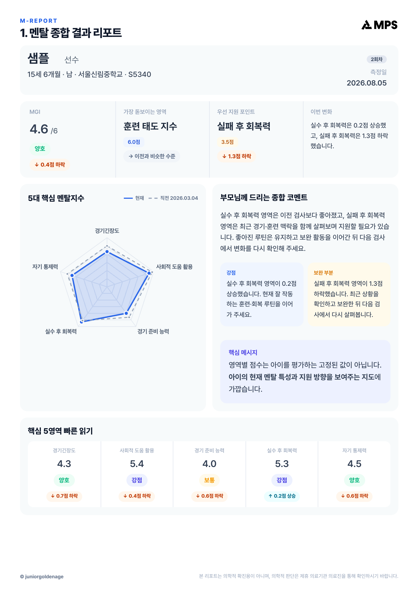
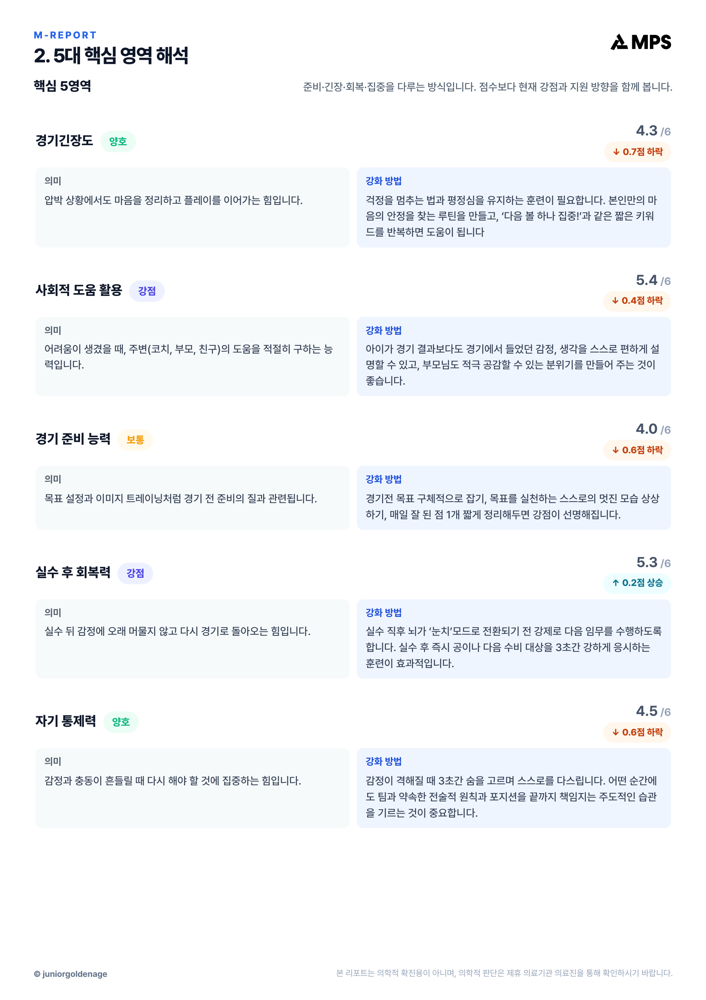
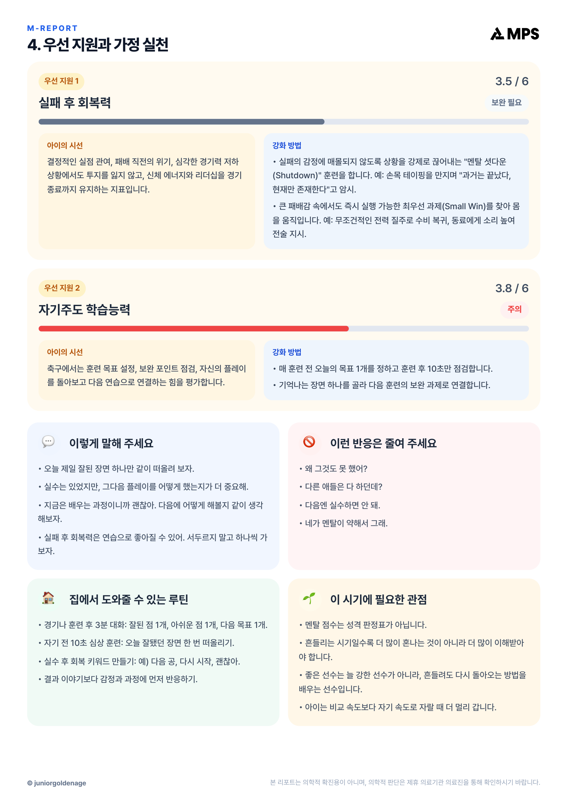
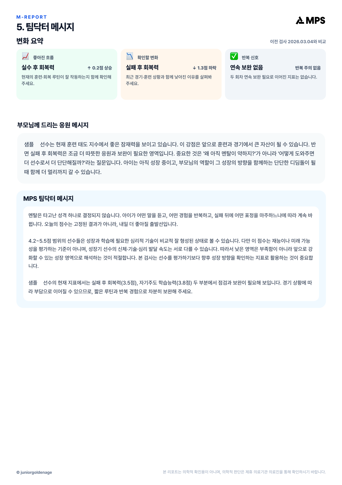

MPS 샘플리포트 스탠다드
멘탈 · 피지컬 · 성장 통합 리포트, 총 12페이지.
선수 이름을 ‘샘플’로 변경한 자료입니다. 나머지 내용은 원본과 동일합니다.
전체 이미지 다운로드 ↓











멘탈 · 피지컬 · 성장 통합 리포트, 총 12페이지.
선수 이름을 ‘샘플’로 변경한 자료입니다. 나머지 내용은 원본과 동일합니다.
전체 이미지 다운로드 ↓


